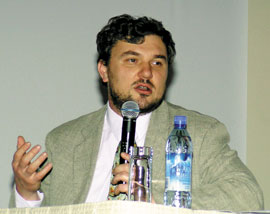
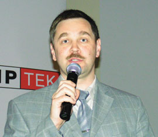
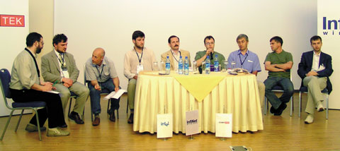
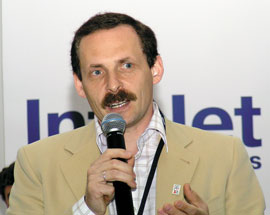
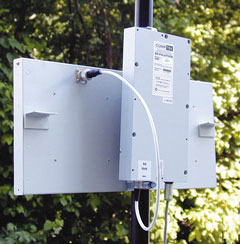

Ростислав Сергеев
Компания CompTek (http://www.comptek.ru) совместно с Ассоциацией документальной электросвязи (АДЭ, http://www.rans.ru) провела 1-2 июля в подмосковном Виноградово девятую ежегодную конференцию БЕСЕДА, посвященную беспроводным сетям передачи данных (БСПД). В ней традиционно приняли участие практически все крупнейшие игроки этого сегмента российского рынка телекоммуникаций - операторы БСПД, производители и поставщики оборудования, представители регулирующих и контролирующих органов, а всего более 130 специалистов из 77 организаций 35 городов России и ближнего зарубежья.
WiMAX: знакомой дорогой
Главной темой "беседы" на этот раз стала технология беспроводного широкополосного доступа (БШД, английская аббревиатура BWA - Broadband Wireless Access) стандарта 802.16 (WiMAX). Петр Кочегаров, руководитель рабочей группы "Беспроводные сети передачи данных" АДЭ и генеральный директор компании InfiNet Wireless, представил на конференции свое видение состояния отрасли BWA и рассказал об основных изменениях в ней за последний год и о прогнозах дальнейшего развития.
|  | Петр Кочегаров (InfiNet): "Технология WiMAX проходит те же этапы, что и Wi-Fi несколько лет назад".
|
Стандарт 802.16 (вернее, группа стандартов) занимает свою нишу в серии беспроводных технологий PAN/LAN/MAN/WAN (табл. 1). Он изначально разрабатывался для распределенных сетей масштаба города (MAN) и обеспечивает такие сервисы и скорости доступа, которые сейчас доступны абонентам в основном через кабельные соединения (ATM, xDSL, Fast Ethernet): гарантированная скорость передачи данных до 100 Мбит/с на расстояния в километры и даже десятки километров от базовой станции, в том числе и в отсутствие прямой видимости. Сейчас эта технология постепенно проходит те же этапы, что и ставшие уже привычными радиосети Wi-Fi (стандарт 802.11). Есть большой стандарт, принятый в конце 2001 г., и дополнение к нему 802.16а, утвержденное в январе 2003 г. (описание спецификаций насчитывает более 1000 страниц). С 2002 г. идет интенсивная работа форума WiMAX (Worldwide Interoperability for Microwave AXess, http://www.wimaxforum.org), готовящего подмножество этого стандарта, в рамках которого обеспечивалась бы совместимость продуктов различных производителей (их сейчас несколько десятков).
Таблица 1. Беспроводные технологии
| Класс беспроводных сетей | Стандарт IEEE | Технология |
| WPAN | 802.15 | Bluetooth |
| WLAN | 802.11 | Wi-Fi |
| WMAN | 802.16 | WiMAX |
| WWAN | 802.20 | ? |
После согласования и утверждения процедур тестирования совместимости в конце 2004 г. должен резко вырасти масштаб выпуска наборов микросхем, пригодных для производства абонентского и операторского оборудования. Более того, в середине следующего года основные производители таких микросхем - Intel и Fujitsu - планируют начать выпуск для этих целей наборов микросхем нового поколения (так называемых system on chip), предельно упрощающих разработку и производство оборудования WiMAX. А это, в свою очередь, должно существенно снизить стоимость абонентского и операторского оборудования, подобно тому, как это произошло несколько лет назад с системами Wi-Fi: первые адаптеры RadioEthernet в середине 90-х гг. стоили более 700 долл., а сейчас цены на них упали до 20-30 долл. Пока же стоимость абонентского комплекта (CPE) оборудования 802.16, как правило, не опускается ниже 1000 долл., а базовая станция "тянет" на 12-15 тыс. долл. И это, по мнению многочисленных экспертов, сдерживает распространение перспективной технологии, хотя она обладает массой неоспоримых преимуществ по сравнению с 802.11 (скорость доступа, дальность действия и гарантированное качество сервиса). Рынок становится готов к массовому восприятию какой-либо технологии доступа, когда цена абонентского комплекта опускается ниже 500 долл. и появляется реальная совместимость оборудования различных производителей. Именно так все происходило с устройствами Wi-Fi.
Еще одна сложность по сравнению с Wi-Fi заключается в том, что клиент редко оказывается в состоянии установить оборудование WiMAX собственными силами; для монтажа и запуска его в эксплуатацию требуется, как правило, неоднократный выезд на место бригады не менее чем из двух квалифицированных специалистов.
Немного статистики
Удивителен, по мнению Петра Кочегарова, и тот факт, что до сих пор основным потребителем технологии BWA остается регион EMEA, где наиболее развита кабельная инфраструктура (более 40% от общего объема мирового рынка, который в 2004 г. должен превысить отметку в 700 млн долл., а в следующем году - перешагнуть миллиардный рубеж). Всего же в мире установлено около 10 тыс. базовых станций и более миллиона абонентских терминалов стандарта 802.16. Таким образом, на одну базовую станцию приходится более 100 терминалов. В нашей стране, по словам г-на Кочегарова, это соотношение лежит в диапазоне 1:50 - 1:30. Примерно 85% оборудования работает в операторских сетях, а оставшиеся 15% приходится на частные корпоративные сети. Достаточно неожиданно и то, что 40% услуг предоставляется в диапазоне 3,5 ГГц, а следующий по величине вклад дает диапазон 5,2-5,8 ГГц.
В России перспективы диапазона 3,5 ГГц гораздо слабее, поскольку эти частоты в значительной степени уже заняты системами спутниковой связи. Наиболее перспективен, по мнению заместителя генерального директора НПФ "Гейзер" Александра Стадинчука, диапазон 5,8 ГГц. Впрочем, если рассматривать международные нормы, то гармонизации и согласования требуют российские процедуры в области не только частотного регулирования, но и ввоза и сертификации оборудования. Последнее станет особенно актуальным в следующем году, когда начнется массовый выпуск систем на базе вышеупомянутых наборов микросхем, и новое оборудование западных производителей станет появляться гораздо чаще, чем теперь.
Intel: ставка на WiMAX
Об интересе крупнейшего производителя компьютерных микросхем к перспективной беспроводной технологии и, в частности, к ее широкому внедрению в России заявил старший вице-президент Intel Патрик Гелсингер в рамках проходившего в Москве в апреле "Дня беспроводных технологий" Intel. На БЕСЕДЕ-9 также присутствовало немало сотрудников московского и нижегородского офисов Intel (http://www.intel.ru), двое из которых выступили с объемными докладами. Эдуард Ермилов, директор по развитию ИТ-проектов в промышленности, представил общую стратегию фирмы по отношению к WiMAX. Подобно тому, как несколько лет назад Intel приняла решение перейти для мобильных устройств на технологию Centrino (и сейчас более половины ноутбуков выпускается с интегрированными средствами Wi-Fi), на 2006 г. фирма прогнозирует начало выпуска ноутбуков со встроенными абонентскими модулями WiMAX, а к 2008 г. таких мобильных компьютеров должно производиться более половины. Следом за ноутбуками, примерно в 2007 г., станет возможной интеграция технологии WiMAX и в КПК.
|  | Эдуард Ермилов (Intel): "В 2006 г. начнется выпуск ноутбуков с интегрированными модулями WiMAX".
|
Технологии Wi-Fi и WiMAX не станут конкурентами, а будут синергически взаимодействовать, обеспечивая для пользователя наилучшее соединение в соответствии с выбранными критериями. В 2006 г. будут построены первые "WiMAX-купола" над некоторыми крупными городами мира. Вполне возможно, что в их числе окажется и Нижний Новгород, о чем сообщил глава Intel Крейг Барретт во время недавнего визита в Россию.
С подробным техническим докладом о стандарте 802.16 и технологии WiMAX выступил сотрудник нижегородской лаборатории Intel Владимир Быковников. Он, в частности, отметил, что следом за спецификациями 802.16 и 802.16а должны быть приняты и новые (табл. 2) - 802.16d (или 802.16REVd, лето 2004 г.) и 802.16е (2005 г.). Последний, в частности, должен описывать поддержку мобильных абонентов в диапазоне до 6 ГГц, а также процедуры роуминга и хэндовера.
Таблица 2. Основные характеристики семейства стандартов WiMAX
| Стандарт | Время выхода | Частот-ный диапа-зон, ГГц | Условия распро-стране-ния сигнала | Скорость передачи данных, Мбит/с | Модуля-ция | Подвиж-ность | Ширина канала, МГц | Типичный радиус зоны покрытия, км |
| 802.16 | Декабрь 2001 | 10-66 | В зоне прямой видимо-сти | 32-134 (при полосе 28 МГц) | QPSK, 16QAM, 64QAM | Фиксиро-ванный | 20, 25 и 28 | 2-4 |
| 802.16a/d | Январь 2003/ III кв. 2004 (a/d) | <11 | За преде-лами зоны прямой видимо-сти | До 75 (при полосе 20 МГц) | OFDM 256, OFDMA 1x, BPSK, QPSK, 16QAM, 64QAM | Фиксиро-ванный | Избира-тельная ширина от 1,25 до 20 | 4-6 (до 20 в сельской мест-ности) |
| 802.16e | III кв. 2005 | <6 | За преде-лами зоны прямой видимо-сти | До 15 (при полосе 5 МГц) | OFDM 256, OFDMA 1x, BPSK, QPSK, 16QAM, 64QAM | Город-ская подвиж-ность, регио-нальный роуминг | Избира-тельная ширина от 1,25 до 20 | 4-6 |
| Источник: Intel | ||||||||
Wi-Fi и хотспоты
И все-таки, хотя основная часть программы БЕСЕДЫ-9 и была посвящена техническим и нормативным вопросам WiMAX, не была забыта и технология Wi-Fi. С точки зрения технической ее развитие практически завершено, цены на оборудование стали очень низкими, и теперь на первый план выходят проблемы организации бизнеса с использованием данной технологии.
О новом проекте, нацеленном на распространение точек беспроводного доступа в Интернет (хотспотов) в ресторанном деле (Wi-Fi.yandex.ru), рассказал генеральный директор компании "Яндекс" Аркадий Волож. В рамках предложенной "Яндекс" бизнес-модели минимальные затраты на организацию такой точки составляют около 100 долл. за подключение и столько же - ежемесячная абонентская плата. Доля ноутбуков, оснащенных адаптерами Wi-Fi, постоянно растет (сейчас она составляет 30-40%, до 70% новых ноутбуков выпускается со встроенными адаптерами Wi-Fi, а к 2005 г. их доля достигнет 90%), а стоимость Интернет-трафика постоянно снижается. Поэтому от массового распространения бесплатных точек беспроводного доступа в кафе, ресторанах и других подобных заведениях должны получить выгоду и их владельцы, и провайдеры доступа, и стимулирующая этот процесс компания "Яндекс", и, самое главное, - клиенты.
Впрочем, с г-ном Воложем не вполне согласились участники круглого стола, состоявшегося следом за его выступлением и посвященного перспективам Wi-Fi в России с точки зрения операторов БСПД. В частности, руководители операторских компаний из российских регионов - Олег Гришин ("Деловая сеть", Уфа) и Игорь Камынин (Unico, Волгоград) считают, что пока у такого бизнеса мало перспектив и более интересны в этом плане деловые центры, гостиницы и аэропорты. В целом, по их мнению, наша страна за пределами двух столиц к внедрению хотспотов еще не готова, причем главным образом по экономическим причинам, и клиентами Wi-Fi в регионах пока остаются практически только корпоративные пользователи.
|  |
| Круглый стол "Перспективы Wi-Fi в России. Взгляд со стороны операторов БСПД" собрал представителей Москвы, Санкт-Петербурга, Самары, Уфы и Волгограда.
|
Как сообщил ведущий круглого стола, главный редактор Web-сайта "Телеком-Форум" Евгений Евдокименко, прошлогодние обещания некоторых компаний развернуть по нескольку десятков хотспотов остались невыполненными, и фактически этого уровня (более 10 действующих хотспотов) достигли только четыре фирмы. По данным "Телеком-Форума", лидирует здесь Quantum Communications (http://www.quantum.ru), организовавшая в Санкт-Петербурге около двух десятков точек беспроводного публичного доступа в Интернет. Следом за лидером идут компании "Петерстар", "Таском" и FastNet Solution ("Моском"), каждая из которых установила около десяти точек доступа, а из других городов по одному хотспоту эксплуатируется в Самаре и Нижнем Новгороде. Сайт CNews.ru со ссылкой на агентство J'son & Partners приводит близкую статистику, согласно которой четверка лидеров остается той же, только места в ней перераспределены следующим образом: "Таском" (17 хотспотов), Quantum (15), "Петерстар" (14) и "Моском" (13).
Пока основным игроком на рынке подобных услуг остаются Интернет-провайдеры, в перечисленных хотспотах основная бизнес-модель - это платный доступ по предоплаченным карточкам, причем довольно дорогой (от 5 до 10 долл./ч), и карточки пока очень слабо раскупаются. Отчасти этим объясняется инициатива "Яндекса", поскольку, как считает Аркадий Волож, в недалеком будущем Wi-Fi-устройства в диапазоне 2,4 ГГц получат столь широкое распространение, что коммерческое использование этих частот станет практически невозможным.
|  |
| Аркадий Волож ("Яндекс"): "Оборудование Wi-Fi - очень простое и дешевое, его может устанавливать кто угодно, в диапазоне 2,4 ГГц скоро будут миллиарды работающих устройств, и поэтому коммерческая деятельность в нем станет практически невозможной".
|
Тем не менее российские операторы БСПД по-прежнему, как и год назад, против открытия даже диапазона 2,4 ГГц. Во-первых, они уже затратили значительные средства на получение разрешений, а во-вторых, безлицензионное использование оборудования в этом диапазоне повысит соблазн увеличить мощность передающих устройств (например, для увеличения дальности связи), что может привести к серьезным сбоям в давно работающих системах.
Revolution на экспортОтрадно, что на конференции шла речь не только о ввозе, но и вывозе оборудования отечественного производства. Недавно выделившаяся из состава CompTek компания InfiNet Wireless (http://www.infinet.ru) начала активно осваивать рынки Юго-Восточной Азии с хорошо известными отечественным операторам БСПД радиомаршрутизаторами Revolution. Это оборудование, обеспечивающее широкополосный доступ в диапазонах 2,4 и 5,25-5,35 ГГц со скоростью до 54 Мбит/с, по мнению специалистов CompTek и InfiNet, обеспечивает не менее половины российского рынка оборудования BWA. 
Серия Revolution продолжает развиваться и совершенствоваться. В частности, в устройствах Revolution-5000 реализована новая функция autobitrate, которая позволяет передавать данные от базовой станции к абоненту на максимально возможной скорости. Повышение или понижение скорости происходит автоматически в зависимости от состояния радиоканала и без перерегистрации абонента, что значительно повышает устойчивость работы системы. |